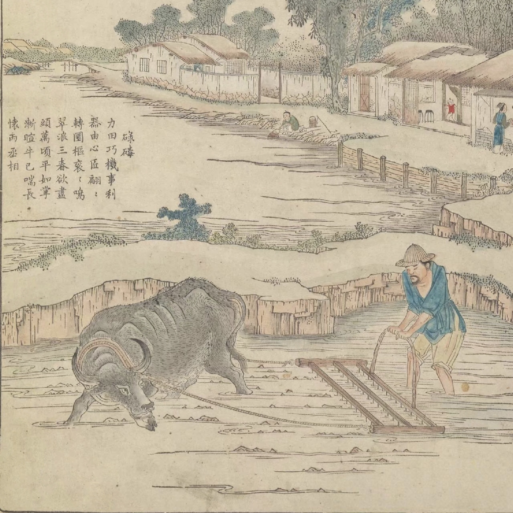

农耕文明精髓

古代农业组成
了解中国古代农业的基本构成，包括耕作制度、农具演变、作物种类等核心要素。

古代农业科技
探索中国古代农业的智慧结晶，从水利工程到农具创新，感受古人的科技智慧。
历代农业智慧
领略不同朝代农业发展的特色与成就，感受中华农耕文明的演进历程。
探索五千年农耕智慧，感受中华文明的深厚底蕴，了解古代农业如何滋养华夏子孙
了解中国古代农业的基本构成，包括耕作制度、农具演变、作物种类等核心要素。
探索中国古代农业的智慧结晶，从水利工程到农具创新，感受古人的科技智慧。
领略不同朝代农业发展的特色与成就，感受中华农耕文明的演进历程。

中国古代农业科技成就斐然，在水利工程、农具创新、耕作技术等方面都有卓越创造，为世界农业文明做出了重要贡献。

中国历代王朝都重视农业发展，在不同历史时期形成了各具特色的农业技术和制度，共同构成了中华农耕文明的丰富内涵。
夏商周时期，农业从原始采集狩猎向定居农耕转变，形成了"井田制"。春秋战国时期，铁器广泛使用，牛耕技术推广，都江堰、郑国渠等大型水利工程兴建。
秦统一后推行"重农抑商"政策，汉代赵过推广"代田法"，氾胜之总结"区田法"，《氾胜之书》成为现存最早农书。铁制农具普及，犁耕技术成熟。
《齐民要术》系统总结了北方农业技术，江南地区开始开发，形成稻麦轮作制。水碾、水碓等水力机械广泛应用，农产品加工业发展。
曲辕犁发明并推广，江东犁成为南方水田耕作主要工具。水利建设成就显著，大运河贯通南北。茶叶种植普及，形成重要经济产业。
占城稻引入并推广，一年两熟制普及。江南成为全国粮仓，《陈旉农书》总结南方水田耕作经验。棉花种植推广，纺织业发展。
《农政全书》集古代农学大成，玉米、甘薯、马铃薯等美洲作物传入并推广。珠江三角洲"桑基鱼塘"生态农业模式成熟，农业商品化程度提高。